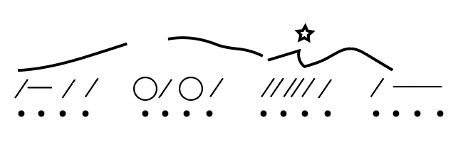

Open Music Theory：繁體中文版
視唱與聽寫基礎
不論是聲樂或器樂學習者，或兩者兼具，你大概都會學習視唱。視唱就是看譜即唱，唱出先前從未聽過或看過的音樂。相關的另一項能力是節奏視讀，也就是看著先前從未聽過或看過的節奏，直接數出來。有許多方法可以幫助你學習這兩項能力。
查看英文原文
Key Takeaways
- Sight-singing means to sing at sight, having never before heard or seen what you are singing. Sight-counting is counting a rhythm you have never before heard or seen.
- Always practice sight-singing with the rhythmic and melodic solmization systems your instructor taught you. The more you practice, the easier solmization will be!
- Practice sight-singing and sight-counting while conducting when possible. If you’re having trouble, practice at a slower tempo.
- Dictation involves translating rhythms, melodies, chord progressions, or other aural sounds that you’ve never before seen, played, or sung into staff notation.
- Strategies for rhythmic dictation include dot grids, slash notation, and protonotation. Conducting and/or tapping while taking dictation can also help.
- Strategies for melodic dictation include contour lines, writing down solmization syllables, and protonotation. Conducting and/or tapping while taking dictation can also help.
Regardless of whether you are a vocalist or instrumentalist (or both!), you will likely study sight-singing. Sight-singing means to sing at sight, having never before heard or seen what you are singing. A related skill is sight-counting, which is counting a rhythm you have never before heard or seen. There are many strategies that will help you learn how to sight-sing and sight-count.
如果在課堂上學習視唱與節奏視讀，多半會坐著練習。視唱或數拍時，良好姿勢很重要。坐在椅子前緣，坐直，讓大腿與地面平行。運用橫膈膜呼吸，而非只用胸部，並盡可能清楚地唱出或念出各個音節。
範例 1示範坐著歌唱的正確姿勢：
範例 1。坐著歌唱的正確姿勢。
節奏視讀時，使用節奏唱讀系統會有幫助。《Open Music Theory》主要採用美國標準數拍法，但也有許多其他實用系統。以下是一些練習方法：
- 不要先把拍數寫在譜上。這樣既能節省時間，也能幫助你學會看譜即數。
- 第一次看到要數拍的節奏時，先留意拍號：每小節有幾拍？哪一種音符時值代表一拍？
- 數拍時同時打指揮，有助於保持穩定速度，並記得目前數到哪一拍。
- 如果不打指揮，就試著一邊數拍，一邊穩定地打拍子，以維持速度。
- 若仍難以保持穩定速度，可以搭配節拍器應用程式練習。
- 若節奏或唱讀音節有困難，可以放慢速度，或將節奏拆成較小的片段練習。
視唱時，使用旋律唱讀系統非常有幫助，例如音階級數或唱名（參閱〈大音階、音階級數與調號〉及〈小音階、音階級數與調號〉）。兩種系統都適用，重點是持續練習；練習越多，唱讀就越容易。以下是一些視唱方法：
- 不要先把唱名或音階級數寫在譜上。這樣既能節省時間，也能幫助你學會看譜即唱。
- 第一次看到要視唱的旋律時，先留意譜號、拍號與調號：用哪一種譜號？每小節有幾拍？哪一種音符時值代表一拍？作品採用哪個調？
- 注意旋律輪廓。唱對方向——上行、下行或同音——就已經成功一半了！
- 視唱時同時打指揮，有助於保持穩定速度，並記得目前唱到哪一拍。
- 如果不打指揮，就試著一邊視唱，一邊穩定地打拍子，以維持速度。
- 若視唱時難以保持穩定速度，可以搭配節拍器應用程式練習。
- 若旋律有困難，可以放慢速度，或拆成較小的片段練習。
- 若困難在節奏，先去掉音高，只練節奏。
- 若困難在音高，先去掉原有節奏，用同一種簡單節奏唱出各音。
學習視唱與節奏視讀很有收穫，但要精熟這些能力需要多年時間。因此，許多大學音樂課程安排了四門完整課程專門訓練這些能力，常稱為「聽覺技能」（Aural Skills）。請對自己有耐心；若學習遇到困難，及早找老師協助。
查看英文原文
Strategies for Sight-Singing and Sight-Counting
If you are learning to sight-sing and sight-count in a classroom, then you are likely going to practice these skills sitting down. When you sight-sing or sight-count, it is important to make sure you have good posture. You will want to sit up straight, at the edge of your chair, with your thighs parallel to the ground. Breathe from your diaphragm (not your chest!) and articulate your singing and counting syllables as clearly as possible.
Example 1 demonstrates proper singing posture while sitting down:
Example 1. Proper singing posture sitting down.
When sight-counting, it is helpful to use a rhythmic solmization system. Open Music Theory prioritizes American standard counting, but there are many other great counting systems available. Here are some other strategies for sight-counting:
- Do not write your counts on your music. This will save you time and will help you to learn to count at sight.
- When you first look at a rhythm to sight-count, note the time signature. How many beats are in each measure, and what note value gets the beat?
- Conduct while you sight-count. This will help you to keep a steady tempo and to remember which beat you are counting.
- If you are not conducting, try tapping a steady beat while sight-counting. This will help you to keep a steady tempo.
- If you are still having trouble keeping a steady tempo, practice with a metronome app.
- If you’re having trouble with a rhythm or with solmization syllables, practice at a slower tempo or break the rhythm down into smaller chunks.
When sight-singing, it is extremely helpful to use a melodic solmization system, such as scale degrees or solfège (see both Major Scales, Scale Degrees, and Key Signatures and Minor Scales, Scale Degrees, and Key Signatures.) Both systems are valid; what is important is that you practice consistently, as solmization will become easier the more you practice it. Here are some other strategies for sight-singing:
- Do not write your solfège or scale degrees on your music. This will save you time and will help you to learn to sing at sight.
- When you first look at a melody to sight-sing, note the clef, time signature, and key signature. What is the clef? How many beats are in each measure, and what note value gets the beat? What key is the work in?
- Notice the contour of the melody you are about to sight-sing. Singing the correct direction (up, down, or the same note) is half the battle!
- Conduct while you sight-sing. This will help you to keep a steady tempo and to remember which beat your singing.
- If you are not conducting, try tapping a steady beat while sight-singing. This will help you to keep a steady tempo.
- If you are having trouble sight-singing with a steady tempo, practice with a metronome app.
- If you’re having trouble with a melody, practice at a slower tempo or break the melody down into smaller chunks.
- If you’re having trouble with rhythm, take the pitches out and just practice the rhythm.
- If you’re having trouble with pitches, take the rhythm out and sing the pitches on a singular rhythm.
Learning to sight-sing and to sight-count is rewarding, but it takes many years to master these skills. This is why many undergraduate music curricula have four full classes dedicated to these skills (often called “Aural Skills”). Remember to be patient with yourself and to meet with your instructor for help early on if you are struggling.
聽寫是音樂家學習的另一項重要能力。老師可能播放你從未看過、演奏或演唱過的節奏、旋律、和弦進行或其他聲音，接著由你將聽到的聲音轉寫成五線譜。以下介紹幾種有助於聽寫的方法。
查看英文原文
Strategies for Dictation
Dictation is another important topic that musicians study. Your instructor will likely play rhythms, melodies, chord progressions, or other aural sounds that you’ve never before seen, played, or sung. You will then translate those aural sounds into staff notation. There are many strategies that will help you with dictation.
節奏聽寫
範例 2。供聽寫練習的節奏。
節奏聽寫時，打指揮或打拍子也有幫助。打拍子能幫你聽出音是否落在拍上，或拍上是否為休止；打指揮則能幫你辨認哪些拍有起音、延續音或休止。
查看英文原文
Rhythmic Dictation
Example 2. A rhythm for dictation.
Listen to Example 2, which is a recording of a rhythm for dictation. One strategy for taking rhythmic dictation is to construct a dot grid. A dot grid is a series of dots that represent beats and measures. Example 3 shows a dot grid for four measures in common time:
Once a dot grid is constructed, you can place slashes to indicate where you hear articulations, dashes (horizontal lines) to indicate sustained notes, and circles to indicate rests. This is called slash notation. Next, you will want to translate your slash notation to staff notation. Example 4 shows slash notation, followed by staff notation.
Example 4. Slash notation and staff notation of Example 2.
It is also helpful to conduct or tap while taking rhythmic dictation. Tapping allows you to hear if a note happens on a beat or not—or if there is a rest on a beat. Conducting can help you to identify which beats have articulations, sustains, and rests.
旋律聽寫
請聆聽範例 4，它在前述範例 2的節奏上加了音高。旋律聽寫的第一步，是先寫下旋律的節奏（見前一節「節奏聽寫」），再加上音高。有幾種方法可以使用：第一種是畫旋律輪廓線，表示音是往上、往下，還是維持不變（範例 5）。也可以用星號或其他符號，標出聽到跳進的位置。另一種方法是使用旋律唱讀系統，寫下聽到的音節（範例 6）。
{kind=link}

{kind=link}
範例 6。在斜線記法上加入唱名。
下一步是將旋律輪廓線與唱讀音節轉寫成五線譜（範例 7）。
旋律聽寫時，打指揮或打拍子也有幫助，原因與節奏聽寫相同。
查看英文原文
Melodic Dictation
Example 4. A melody with the same rhythm as Example 2.
Listen to Example 4, which adds pitches to the rhythmic dictation from Example 2 above. The first step for taking melodic dictation is to write down the melody’s rhythm (see the previous section on rhythmic dictation), then add pitch to your rhythm. There are several strategies for this. The first strategy is to use contour lines, which indicate whether a note moves up, down, or stays the same (Example 5). You can also use stars (or another symbol) to indicate where you hear a leap. Another strategy is to write down the syllables you hear using your melodic solmization system (Example 6).
Example 6. Solfège has been added to the slash notation.
The next step is to translate your contour lines and solmization syllables into staff notation (Example 7).
Example 7. Examples 5–6 in staff notation.
It is also helpful to conduct or tap while taking melodic dictation, for the same reasons that it is helpful for rhythmic dictation.
聽寫草記法（protonotation）是一套先記下基本音高與節奏的記譜系統，取自 Gary Karpinski 的《Manual for Ear Training and Sight Singing》（聽音與視唱手冊）。[1]這套系統也可用於節奏與旋律聽寫，許多學生覺得很實用。範例 8將同一旋律分別寫成草記譜與五線譜：
範例 8。同一旋律的聽寫草記譜與五線譜。
聽寫草記法不包含拍單位時值或調性的資訊，只呈現基本的音高與節奏要素（下文會進一步說明）。
查看英文原文
Protonotation
Protonotation is a basic system of musical notation that is drawn from the book Manual for Ear Training and Sight Singing by Gary Karpinski.[1] This system can also be used to take rhythmic and melodic dictation, and many students find it very helpful. Example 8 shows a melody in protonotation and in staff notation:
Example 8. A melody in protonotation and staff notation.
Protonotation does not contain information about beat duration or key. It only represents basic pitch and rhythmic elements (discussed further below).
聽寫草記法的要素
範例 9–11分別顯示二拍子、三拍子與四拍子的空白草記格：
- 範例 9。二拍子的草記格。
{kind=link}
- 範例 10。三拍子的草記格。
{kind=link}
- 範例 11。四拍子的草記格。
{kind=link}
二拍子與三拍子的下拍以較長的垂直線表示，非重音拍以較短的垂直線表示。四拍子的第三拍是次強拍，因此用中等長度的線表示。
聽寫草記法以橫線表示節奏時長，以首調唱名表示音高，也可以改用音階級數。箭頭表示旋律跳進的方向。某一拍或拍的一部分若沒有橫線，就表示休止。也可以用 X 代替空白，以區分「確定是休止」與「尚未完成聽寫」的部分。
查看英文原文
Elements of Protonotation
Examples 9–11 shows blank protonotation grids for duple, triple, and quadruple meters:
- Example 9. Grid for duple meter.
- Example 10. Grid for triple meter.
- Example 11. Grid for quadruple meter.
In duple and triple meter, downbeats are represented by longer vertical lines, and non-accented beats are represented by shorter vertical lines. In quadruple meter, the third beat of each bar is of medium accent, so it is represented by a medium-length line.
In protonotation, notes are notated by using horizontal lines for rhythmic duration and moveable-do solfège syllables (although scale degrees can be substituted). Arrows are used to denote the direction of any melodic leaps. Rests are represented by the absence of a horizontal line in a given beat or part of a beat. It can also be helpful to use an X instead of a blank space, so you can distinguish a rest you are sure about from a part of the protonotation you haven’t yet completed.
將聽寫草記譜轉為五線譜
只要知道（1）譜號、（2）主音音高，以及（3）拍單位時值或拍號下方數字，就能輕鬆將草記譜中的旋律轉寫成五線譜。
- 先寫出譜例的基本資訊：
- 畫出指定譜號；若沒有指定，就依你聽到的旋律音域選擇適當譜號。
- 依指定主音，以及聽到或指定的大小調，決定調號。
- 依指定的拍單位時值或拍號下方數字，配合草記譜呈現的拍節，決定拍號。
- 草記格中每一條較長的垂直線，都轉成五線譜的小節線。
- 在每小節中填入音符：
- 音域、唱名與主音共同決定各音的音高。
- 依拍號，將草記節奏轉換成具體的音符時值。例如，在 4/4 拍（以四分音符為一拍）中，長兩拍的音是二分音符，也就是兩個四分音符的時值；在 2/2 拍（以二分音符為一拍）中，長兩拍的音則是全音符，也就是兩個二分音符的時值。
如果旋律的譜號、主音音高或拍號尚未指定，同一份草記譜就能以多種方式寫成五線譜。範例 12將同一份旋律草記譜，分別寫成兩種不同的譜號、複拍子與調號。第一種使用低音譜號、G 大調，拍號下方數字為 8；第二種使用中音譜號、B♭ 大調，拍號下方數字為 4。
範例 12。同一份旋律草記譜的兩種五線譜寫法。
範例 13將同一份旋律草記譜，寫成三種不同的譜號、複拍子與調號。第一種使用高音譜號、E♭ 大調，拍號下方數字為 4；第二種使用次中音譜號、C♯ 大調（與譜上所給的調號不同），拍號下方數字為 8；第三種使用低音譜號、F 大調，拍號下方數字為 1。
範例 13。同一份旋律草記譜的三種五線譜寫法。
和視唱、節奏視讀一樣，節奏與旋律聽寫也需要多年練習才能精熟。如果你是大學音樂系學生，可能會在多年的許多課程中持續練習。請對自己有耐心；遇到困難時，及早找老師協助。
- Chenette, Timothy。2022。〈Aural Skills Pedagogy Research〉（聽覺技能教學研究）。Foundations of Aural Skills（聽覺技能基礎）。Pressbooks：https://uen.pressbooks.pub/auralskills/back-matter/aural-skills-pedagogy-research/。
- 同作者。2021。〈What are the Truly Aural Skills?〉（什麼才是真正的聽覺技能？）。Music Theory Online 27，第 2 期：https://mtosmt.org/issues/mto.21.27.2/mto.21.27.2.chenette.html。
- Chenette, Timothy、Stacey Davis 與 Stanley Kleppinger。2022。〈A Critical Review of Current Aural Skill Materials and Pedagogical Practices〉（現行聽覺技能教材與教學實務的批判性回顧）。Journal of Music Theory Pedagogy 36，第 6 篇：https://digitalcollections.lipscomb.edu/jmtp/vol36/iss1/6。
- Cleland, Kent 與 Paul Fleet。2021。The Routledge Companion to Aural Skills Pedagogy（Routledge 聽覺技能教學指南）。紐約：Routledge。
- Floyd, Eva G. 與 Marshall A. Haning。2014。〈Sight-Singing Pedagogy: A Context Analysis of Choral Methods Textbooks〉（視唱教學：合唱教學法教材的脈絡分析）。Journal of Music Teacher Education 25，第 1 期：11–22。
- Karpinski, Gary。2021。Manual for Ear Training and Sight Singing（聽音與視唱手冊）。紐約：Norton。
- 同作者。2000。Aural Skills Acquisition（聽覺技能的習得）。紐約：Oxford。
- Kleppinger, Stanley。2017。〈Practical and Philosophical Reflections Regarding Aural Skills Assessment〉（關於聽覺技能評量的實務與哲學思考）。Indiana Theory Review 33，第 1–2 期：153–182。
- Rogers, Nancy 與 Robert W. Ottman。2021。Music for Sight Singing（視唱教材）。倫敦：Pearson。
- Urist, Diane J.。2016。The Moving Body in the Aural Skills Classroom: a Eurhythmics Based Approach（聽覺技能課堂中的身體律動：以節奏律動為基礎的方法）。紐約：Oxford。
媒體出處與授權
- 〈拍點格〉© Chelsey Hamm，採用 CC BY-SA（姓名標示—相同方式分享）授權。
- 〈旋律輪廓線〉© Chelsey Hamm，採用 CC BY-SA（姓名標示—相同方式分享）授權。
- 〈斜線記法與唱名〉© Chelsey Hamm，採用 CC BY-SA（姓名標示—相同方式分享）授權。
- Gary S. Karpinski。2021。Manual for Ear Training and Sight Singing（聽音與視唱手冊）。紐約：W.W. Norton。↵
查看英文原文
Converting Protonotation to Staff Notation
If you know 1) the clef, 2) the tonic pitch, and 3) either the beat duration or bottom number of the time signature, you can convert a melody in protonotation to staff notation easily.
- Write the basic information about the example:
- Draw the clef provided (or choose an appropriate one based on your perception of the register of the melody).
- Determine the key signature from the tonic provided and the mode (major or minor) that you heard or that were provided.
- Determine the time signature from the beat value / bottom number provided and from the meter reflected in your protonotation.
- Each of the long protonotation lines becomes a bar line in staff notation.
- Insert the notes into each bar:
- The register, solfège syllable, and tonic will determine the pitches.
- Use the time signature to determine how to translate the protonotated rhythms into specific note values. For example, a two-beat note in common time (quarter-note beat) is a half note (2 × a quarter note), while in cut time (half-note beat), it is a whole note (2 × a half note).
If the clef, tonic pitch, and/or time signature of the melody have not been specified, the same protonotation can be realized into staff notation in several different ways. Example 12 shows a melody in protonotation that is realized in two different clefs, compound meters, and key signatures. The first realization is in bass clef in the key of G major, and the bottom number of its time signature is 8. The second realization is in alto clef in the key of B♭ major, and the bottom number of its time signature is 4.
Example 12. Two different realizations of a melody in protonotation.
Example 13 shows a melody in protonotation that is realized in three different clefs, compound meters, and key signatures. The first realization is in treble clef in the key of E♭ major, and the bottom number of its time signature is 4. The second realization is in tenor clef in the key of C♯ major (contrasting with the given key signature), and the bottom number of its time signature is 8. The third realization is in bass clef in the key of F major, and the bottom number of its time signature is 1.
Example 13. Three different realizations of a melody in protonotation.
Like sight-singing and sight-counting, rhythmic and melodic dictation take many years to master. If you are an undergraduate music major, you will likely practice these skills throughout many classes, over many years. Again, be patient with yourself and meet with your instructor for help early on if you are struggling.
- Chenette, Timothy. 2022, “Aural Skills Pedagogy Research.” Foundations of Aural Skills. Pressbooks: https://uen.pressbooks.pub/auralskills/back-matter/aural-skills-pedagogy-research/.
- ——. 2021. “What are the Truly Aural Skills?” Music Theory Online 27, no. 2: https://mtosmt.org/issues/mto.21.27.2/mto.21.27.2.chenette.html.
- Chenette, Timothy, Stacey Davis, and Stanley Kleppinger. 2022. “A Critical Review of Current Aural Skill Materials and Pedagogical Practices.” Journal of Music Theory Pedagogy 36, 6: https://digitalcollections.lipscomb.edu/jmtp/vol36/iss1/6.
- Cleland, Kent and Paul Fleet. 2021. The Routledge Companion to Aural Skills Pedagogy. New York: Routledge.
- Floyd, Eva G. and Marshall A. Haning. 2014. “Sight-Singing Pedagogy: A Context Analysis of Choral Methods Textbooks.” Journal of Music Teacher Education 25, no. 1: 11–22.
- Karpinski, Gary. 2021. Manual for Ear Training and Sight Singing. New York: Norton.
- ——. 2000. Aural Skills Acquisition. New York: Oxford.
- Kleppinger, Stanley. 2017. “Practical and Philosophical Reflections Regarding Aural Skills Assessment.” Indiana Theory Review 33, nos. 1–2: 153–182.
- Rogers, Nancy and Robert W. Ottman. 2021. Music for Sight Singing. London: Pearson.
- Urist, Diane J. 2016. The Moving Body in the Aural Skills Classroom: a Eurhythmics Based Approach. New York: Oxford.
- Melodies for Sight Singing (teoria)
- Melodies for Sight Singing (Chorale Tech)
- Melodies for Sight Singing (Ronnie Sanders)
- Rhythms for Sight Counting (Blue Sky Music)
- Sight Singing by Level (YouTube)
- Melodic and Rhythmic Dictations (James Woodward, Youtube)
- Rhythmic and Melodic Dictations (freemusicdictations.net)
- Rhythmic Dictation (teoria)
- Rhythmic Dictation (Tone Savvy)
- Melodic Dictation (teoria)
- Melodic Dictation (Tone Savvy)
- Multimodal Musicianship: Rhythms, Melodies, Rhythmic/Melodic/Harmonic Dictations (Victoria Malawey)
- Foundations of Aural Skills (Timothy Chenette)
- Solfège and Scale Degree Identification (.pdf, .docx)
- Solfège and Scale Degree Identification in a Melodic Context (.pdf, .docx) Worksheet playlist
Media Attributions
- Dot Grid © Chelsey Hamm is licensed under a CC BY-SA (Attribution ShareAlike) license
- Contour Lines © Chelsey Hamm is licensed under a CC BY-SA (Attribution ShareAlike) license
- Slash Notation and Solfège © Chelsey Hamm is licensed under a CC BY-SA (Attribution ShareAlike) license
- Gary S. Karpinski. 2021. Manual for Ear Training and Sight Singing. New York: W.W. Norton. ↵